Versionando projetos Power BI com Git, GitHub e VS Code
Um caminho completo, do primeiro git --version até o Pull Request aprovado pelo time.
Escrito para analistas de dados e desenvolvedores Power BI que nunca usaram Git —
e que precisam parar de trocar arquivos .pbix por e-mail.
Power BI PBIP Git GitHub VS Code ~45 min de leitura 15 capítulos
O caminho que você vai percorrer neste guia: o projeto nasce no Power BI Desktop, é editado no VS Code,
versionado pelo Git, compartilhado no GitHub e revisado pela equipe.
Capítulo 1
Introdução: as quatro ferramentas e por que elas importam
Antes de digitar qualquer comando, vale entender o papel de cada peça. São quatro ferramentas
independentes que, juntas, resolvem o problema mais comum de qualquer equipe de BI:
saber qual é a versão certa do relatório.
O que é Git
É um sistema de controle de versão que roda na sua máquina. Ele tira "fotografias"
(commits) do seu projeto a cada mudança e guarda tudo num histórico: quem alterou, o que alterou,
quando e por quê.
Pense num "Ctrl+Z infinito e compartilhado". O Git é um programa de linha de comando — não tem
tela, não é um site e não precisa de internet para funcionar localmente.
É a nuvem onde os repositórios Git vivem. O Git cuida do histórico local; o GitHub
hospeda esse histórico num servidor para que o time inteiro acesse o mesmo projeto.
Além de armazenar, o GitHub adiciona colaboração: Pull Requests, revisão de código, comentários,
permissões, automações e histórico visual na web.
O Visual Studio Code é um editor de texto e código gratuito da Microsoft. Nele você
abre a pasta do projeto PBIP, lê os arquivos de modelo e relatório, vê exatamente o que mudou
e executa comandos Git no terminal integrado.
É a "sala de controle": editor, terminal, painel de alterações e Pull Requests numa única janela.
PBIP (Power BI Project) é o formato de projeto do Power BI Desktop. Em vez de
um arquivo binário fechado, ele salva o relatório e o modelo semântico como uma
pasta com arquivos de texto (JSON e TMDL).
Essa é a peça que torna tudo possível: texto é exatamente o que o Git sabe versionar, comparar e mesclar.
Essa é a distinção mais importante do guia. Os dois formatos abrem no Power BI Desktop e geram o
mesmo relatório — mas apenas um deles funciona bem com controle de versão.
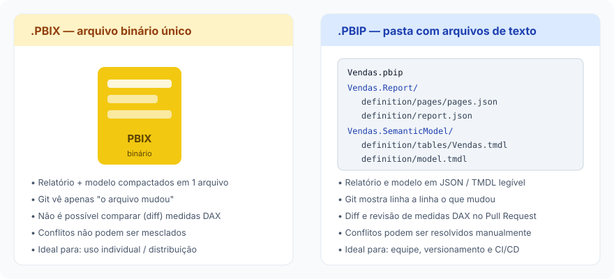
À esquerda, o PBIX: uma caixa fechada. À direita, o PBIP: a mesma informação em arquivos de texto
que podem ser lidos, comparados linha a linha e revisados num Pull Request.
Característica
.PBIX
.PBIP
Formato
Arquivo único binário compactado
Pasta com arquivos de texto (JSON e TMDL)
O Git consegue comparar?
Não — só sabe dizer "o arquivo mudou"
Sim — mostra linha a linha o que mudou
Revisar uma medida DAX no PR
Impossível
Natural, como revisar qualquer código
Dois analistas ao mesmo tempo
Um sobrescreve o outro
Cada um numa branch, merge no fim
Tamanho no repositório
Cresce muito (cada versão é um binário novo)
Cresce pouco (só as linhas alteradas)
Melhor uso
Distribuir, arquivar, trabalho individual rápido
Trabalho em equipe, versionamento, CI/CD
O PBIP não substitui o PBIX no dia a dia do usuário
Você continua abrindo o projeto no Power BI Desktop e publicando no Serviço normalmente.
A diferença é apenas como o projeto é gravado em disco — e isso muda tudo para a equipe.
O problema de trabalhar com arquivos enviados por e-mail
Toda equipe de BI já viveu esta cena. O relatório circula como anexo, cada pessoa baixa uma cópia,
edita, renomeia e devolve. Em poucos dias existem seis versões e ninguém sabe qual é a boa.
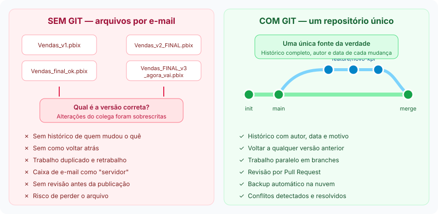
Comparação entre trabalho sem Git e trabalho com Git. À esquerda, o "versionamento por nome de arquivo".
À direita, um histórico único em que cada mudança tem autor, data e motivo.
Sem versionamento
Sobrescrita silenciosa: o trabalho de um colega desaparece sem aviso.
Sem rastreabilidade: não há como saber quem mudou a medida de receita.
Sem volta: se a alteração quebrou o relatório, não existe versão anterior confiável.
Gargalo humano: só uma pessoa pode mexer no arquivo por vez.
Sem revisão: o erro só aparece depois de publicado, na frente do cliente.
Risco operacional: o projeto vive no notebook de alguém.
Com Git e GitHub
Histórico completo: cada commit registra autor, data, arquivos e motivo.
Reversão segura: volte a qualquer ponto do passado em segundos.
Trabalho paralelo: branches permitem duas frentes ao mesmo tempo.
Revisão por pares: nada entra em produção sem alguém olhar.
Backup na nuvem: a máquina pode queimar, o projeto não se perde.
Padronização: o processo é o mesmo para todos, sempre.
Seis passos, uma vez por máquina. Ao final deste capítulo seu computador estará pronto para
versionar qualquer projeto Power BI.
Criar a conta no GitHub
Acesse github.com/signup e crie a conta com o
e-mail corporativo. O nome de usuário aparecerá em todos os commits e Pull Requests,
então escolha algo profissional — ana-souza funciona melhor que aninha2010.
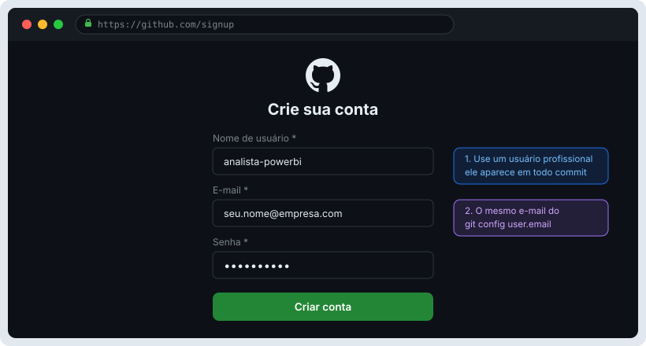
Tela de cadastro do GitHub. Use o mesmo e-mail que você vai configurar no Git mais adiante.
Configurar a autenticação
O GitHub não aceita mais senha na linha de comando. Existem duas formas recomendadas:
Git Credential Manager (mais simples): já vem com o instalador do Git para Windows.
No primeiro git push abre uma janela do navegador, você entra na conta e pronto — as
credenciais ficam salvas no Gerenciador de Credenciais do Windows.
Baixe em git-scm.com/downloads e execute o instalador.
Os padrões servem para quase tudo, mas vale ajustar quatro telas:
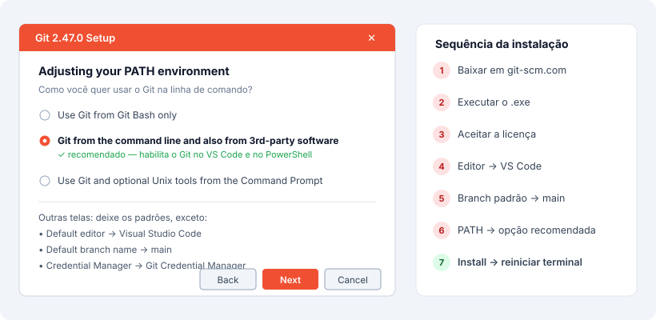
Escolha "Git from the command line and also from 3rd-party software" para que o VS Code e o PowerShell reconheçam o Git.
Instalar o VS Code
Baixe em code.visualstudio.com. Durante a instalação,
marque "Adicionar ao menu de contexto do Explorer" — isso permite clicar com o botão
direito numa pasta e escolher "Abrir com o Code", atalho que você vai usar muito.
Instalar o Power BI Desktop
Prefira a versão da Microsoft Store, que se atualiza sozinha —
o formato PBIP evolui rápido. Depois de instalar, habilite o recurso:
Arquivo ? Opções e configurações ? Opções ? Recursos de Versão Preliminar ?
Power BI Project (.pbip) save option e reinicie o programa.
Sem essa opção marcada, o PBIP não aparece
Se ao salvar você não vê "Power BI project files (*.pbip)" na lista de tipos,
o recurso de preview ainda não foi habilitado ou o Desktop não foi reiniciado.
Instalar as extensões recomendadas
No VS Code, pressione Ctrl+Shift+X e instale:
GitHub Pull Requests
Cria, revisa e aprova Pull Requests dentro do editor, sem abrir o navegador.
GitHub Copilot
Sugere código DAX/M e escreve mensagens de commit a partir das suas alterações.
Power BI / TMDL
Realce de sintaxe e validação para os arquivos .tmdl do modelo semântico.
Material Icon Theme
Ícones por tipo de arquivo — essencial para não se perder na árvore do PBIP.
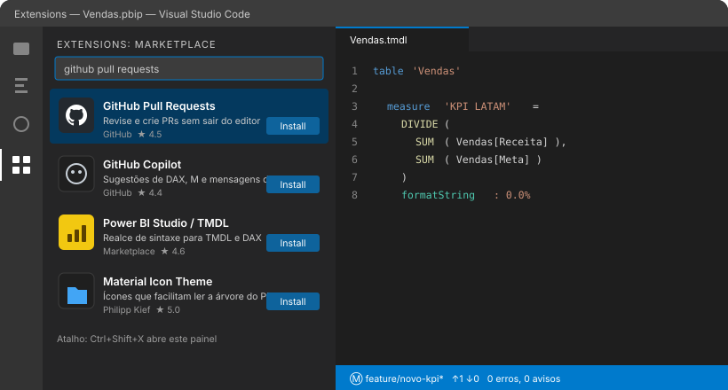
Painel de extensões do VS Code (Ctrl+Shift+X) com as quatro extensões recomendadas.
Verificando a instalação
Abra o PowerShell (ou o terminal do VS Code com Ctrl+') e confirme que o Git responde.
Se aparecer um número de versão, está tudo certo.
PowerShell — verificar versão
PS C:\>git --versiongit version 2.47.0.windows.1
"git não é reconhecido como um comando"
O Git foi instalado mas não entrou no PATH. Feche todos os terminais e o VS Code,
abra de novo e teste. Se persistir, reinstale marcando a opção de PATH recomendada.
Configuração inicial obrigatória
O Git precisa saber quem você é para assinar os commits. Essas três linhas rodam
uma única vez por computador — a flag --global vale para todos os projetos.
Vale também padronizar três comportamentos que evitam dor de cabeça em equipe:
PowerShell — configurações recomendadas
# branch principal chamada "main" em todo projeto novogit config--global init.defaultBranch main
# VS Code como editor padrão de mensagens e conflitosgit config--global core.editor "code --wait"# evita o aviso de divergência no git pullgit config--global pull.rebase false
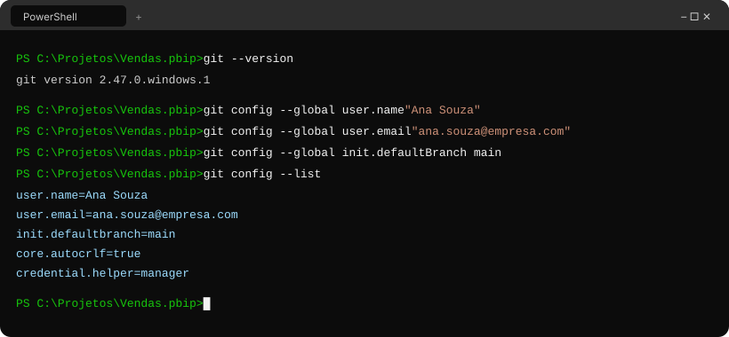
Terminal após a configuração. O git config --list confirma que nome, e-mail e branch padrão
foram gravados corretamente.
Agora o projeto sai do "arquivo solto" e ganha histórico. São quatro passos: abrir no VS Code,
inicializar o Git, criar o .gitignore e fazer o primeiro commit.
O que é, na prática, um projeto PBIP
Quando você salva como .pbip, o Power BI Desktop não grava um arquivo: grava uma
pasta. Dentro dela ficam o relatório e o modelo semântico separados, em texto puro.
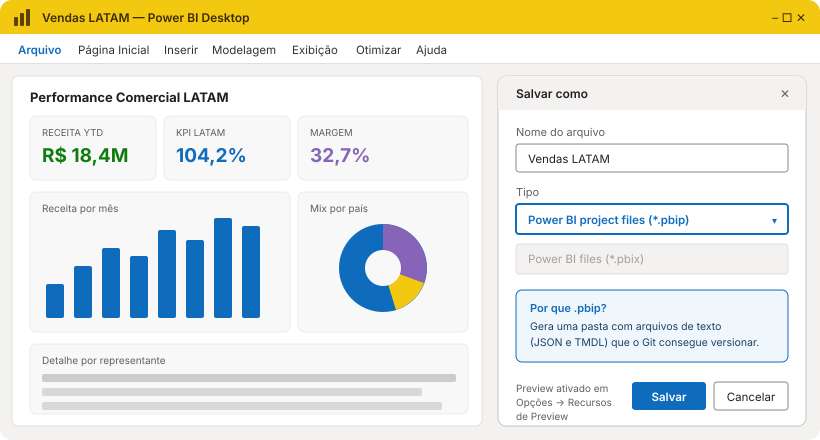
No Power BI Desktop: Arquivo ? Salvar como e escolha
Power BI project files (*.pbip).
Estrutura de pastas do projeto
Esta é a árvore que o Git vai versionar — simplificada primeiro, real depois:
Projeto/????Relatorio.Report# visuais, páginas e layout (JSON)???SemanticModel# tabelas, relações e medidas DAX (TMDL)???.gitignore# o que o Git deve ignorar???outros arquivos# .pbip, README, .platform
Vendas-LATAM/????Vendas.pbip# abra ESTE arquivo no Power BI???Vendas.Report/? ???definition/? ? ???report.json# tema, filtros, configurações? ? ???pages/pages.json# páginas e visuais? ???.platform????Vendas.SemanticModel/? ???definition/? ? ???model.tmdl# modelo, culture, anotações? ? ???tables/Vendas.tmdl# colunas e medidas DAX? ? ???tables/Calendario.tmdl? ???diagramLayout.json????.gitignore???README.md
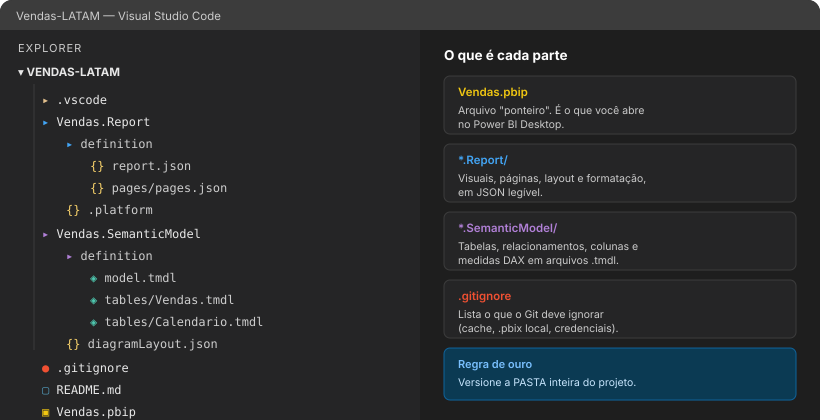
A mesma estrutura vista no explorador do VS Code, com a explicação do papel de cada pasta.
Passo a passo
Abrir a pasta no VS Code
Clique com o botão direito na pasta do projeto e escolha "Abrir com o Code", ou use
Arquivo ? Abrir Pasta. Importante: abra a pasta raiz (a que contém o
.pbip), não uma subpasta.
PowerShell — pelo terminal
cd"C:\Projetos\Vendas-LATAM"code .
Inicializar o repositório
No terminal integrado (Ctrl+'), transforme a pasta num repositório Git. O comando cria
uma subpasta oculta .git onde todo o histórico será guardado.
PowerShell — inicializar
PS ~\Vendas-LATAM>git initInitialized empty Git repository in C:/Projetos/Vendas-LATAM/.git/
Nunca apague a pasta .git
Ela é o repositório. Apagá-la remove todo o histórico local de uma vez.
Criar o .gitignore
Arquivos de cache e credenciais não devem ir para o repositório. Crie um arquivo chamado
.gitignore na raiz com o conteúdo abaixo:
.gitignore
# --- Power BI ---------------------------------------# cache local do modelo (pesado e específico da máquina)
.pbi/localSettings.json
.pbi/cache.abf
**/.pbi/localSettings.json
**/.pbi/cache.abf
# não versione o binário junto do projeto
*.pbix
# --- Credenciais e dados ----------------------------
*.env
credenciais*
*.xlsx
*.csv
# --- Sistema operacional ----------------------------
Thumbs.db
desktop.ini
.DS_Store
# --- Temporários ------------------------------------
~$*
*.tmp
Gere o arquivo automaticamente
O gitignore.io da Toptal monta o
arquivo a partir das tecnologias que você usa. Combine o resultado com as regras de Power BI acima.
Primeiro commit
git add . coloca as alterações na "área de preparo" (staging) e
git commit grava a fotografia no histórico.
Vale fixar o sentido do fluxo. Cada ferramenta entrega o resultado para a próxima:
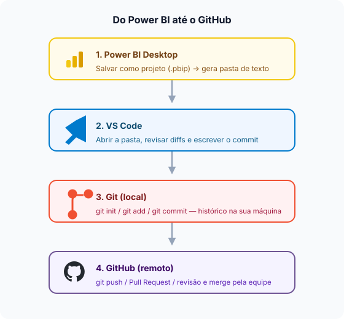
Power BI ? VS Code ? Git ? GitHub. O projeto nasce no Desktop, é revisado no editor,
ganha histórico no Git e chega à equipe pelo GitHub.
Capítulo 4
Criando o repositório no GitHub
O histórico já existe na sua máquina. Agora ele precisa de um endereço na nuvem para que a equipe
acesse o mesmo projeto.
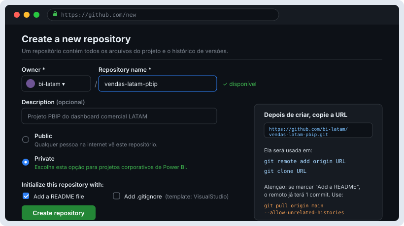
Tela github.com/new. Para projetos corporativos, escolha
Private.
Criando o novo repositório
Nome
Minúsculas, sem acentos, com hífens: vendas-latam-pbip. O nome entra na URL e é difícil de mudar depois.
Privado
Só quem você convidar acessa. É a escolha certa para dados e regras de negócio da empresa.
Público
Visível para a internet inteira. Use apenas em projetos de estudo, demonstração ou open source.
Público significa público de verdade
Um repositório público expõe medidas DAX, nomes de tabelas, strings de conexão e qualquer
credencial esquecida num arquivo. Em ambiente corporativo, sempre privado.
README: a porta de entrada do projeto
O README.md é exibido automaticamente na página do repositório. É onde quem chega descobre
o que é o projeto e como rodá-lo. Um bom README de projeto Power BI responde:
O que este relatório mostra e para qual área.
Fontes de dados e onde ficam as credenciais (nunca no repositório).
Como abrir: qual arquivo .pbip e qual versão do Desktop.
Convenção de branches e quem aprova os Pull Requests.
A URL do repositório
Depois de criar, o GitHub mostra a URL na caixa "Quick setup". É esse endereço que conecta
o local ao remoto. Existem dois formatos:
Formatos de URL
# HTTPS — recomendado para começar (usa o Credential Manager)
https://github.com/bi-latam/vendas-latam-pbip.git
# SSH — exige gerar e cadastrar uma chave, mas não pede senha
git@github.com:bi-latam/vendas-latam-pbip.git
Conectando o repositório remoto
origin é apenas um apelido para a URL — é a convenção universal para "o repositório
principal na nuvem".
A flag -u (de upstream) vincula a branch local main à
origin/main. Depois disso, um simples git push já sabe para onde enviar.
PowerShell — primeiro push
# garante que a branch local se chama maingit branch-M main
git push-u origin main
Saída esperada
Enumerating objects: 31, done.Writing objects: 100% (31/31), 18.42 KiB | 4.61 MiB/s, done.To https://github.com/bi-latam/vendas-latam-pbip.git * [new branch] main -> mainbranch 'main' set up to track 'origin/main'.
Erro "Updates were rejected"?
Acontece quando você marcou "Add a README" ao criar o repositório: o remoto já tem um commit que
você não possui. Traga esse commit antes de empurrar os seus:
git clone baixa o projeto e todo o histórico para uma máquina nova.
É uma operação de primeira vez — e é aqui que muita gente se confunde.
Caso de uso: novo integrante na equipe
Carla entrou no time hoje. Ela não tem nada da pasta do projeto. Depois de receber acesso ao
repositório, três comandos resolvem:
PowerShell — primeira máquina
# 1. vá para a pasta onde os projetos ficamcd"C:\Projetos"# 2. clone — cria a pasta vendas-latam-pbip já com o .git dentrogit clonehttps://github.com/bi-latam/vendas-latam-pbip.git# 3. entre e abra no VS Codecd vendas-latam-pbip
code .
Pronto: Carla agora tem os arquivos, o histórico completo e o origin já configurado.
Ela pode abrir o .pbip no Power BI Desktop e começar a trabalhar.
Por que quem já tem o projeto NÃO deve clonar de novo
Esta é a confusão mais frequente entre quem está começando. Clone não é sinônimo de
atualizar. Clonar cria uma segunda pasta independente, e isso costuma causar
três problemas:
Duas pastas do mesmo projeto na máquina — e você inevitavelmente vai editar a errada.
Commits locais que ainda não foram enviados ficam presos na pasta antiga.
Branches locais em andamento não aparecem na cópia nova.
Quem já tem o projeto atualiza com git pull, que traz apenas o que mudou:
PowerShell — atualizar quem já tem o projeto
# ver em que branch você está e se há algo pendentegit status# trazer as novidades do remoto para a branch atualgit pull# só consultar o que mudou, sem alterar seus arquivosgit fetch
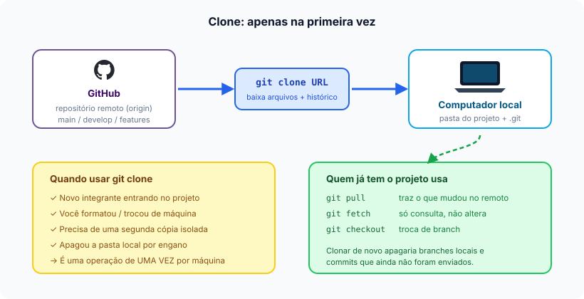
GitHub ? git clone ? computador local. À direita, a regra prática:
clone uma vez, pull todos os dias.
GitHubrepositório remoto
git cloneuma vez por máquina
Computador localpasta + .git
git pulltodos os dias
Alternativa visual: GitHub Desktop
Se a linha de comando ainda intimida, o GitHub Desktop faz
clone, commit, pull e push por botões. Ele executa exatamente os mesmos comandos por baixo —
e mostra o diff das alterações, que é onde o PBIP brilha.
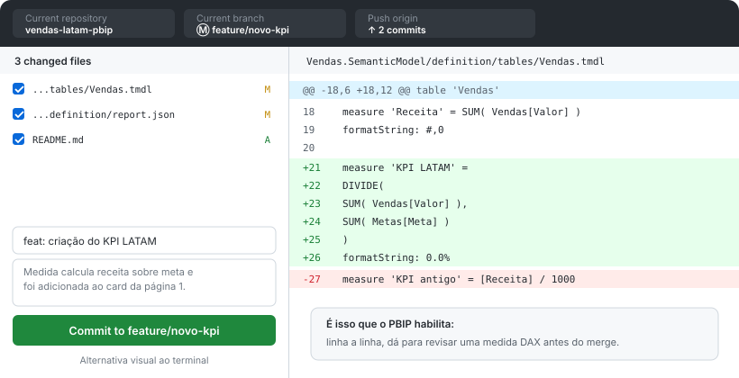
GitHub Desktop com o diff de um arquivo .tmdl: dá para revisar uma medida DAX
linha a linha antes de commitar.
Este é o ciclo que você vai repetir todos os dias. Seis passos, sempre na mesma ordem.
Decore este capítulo e o resto vira detalhe.
1. Criar branch
git checkout -b
Isola sua tarefa do resto do time
2. Alterar
Power BI Desktop
Edite, salve e feche o projeto
3. Verificar
git status
Confira o que mudou antes de gravar
4. Adicionar
git add .
Prepara os arquivos para o commit
5. Commitar
git commit -m
Grava a fotografia no histórico
6. Enviar
git push origin
Publica a branch no GitHub
1. Criar a branch
Nunca trabalhe direto na main. git checkout -b cria a branch e já muda para ela.
Antes disso, garanta que você está partindo de uma base atualizada.
PowerShell — nova branch
# parta sempre da base atualizadagit checkout develop
git pull origin develop
# crie e entre na branch da sua tarefagit checkout-bfeature/novo-kpi
2. Fazer as alterações
Abra o .pbip no Power BI Desktop, crie a medida, ajuste o visual, salve
(Ctrl+S) e feche o Desktop. Fechar é importante: o Power BI só grava
todos os arquivos do projeto ao salvar, e arquivos abertos podem gerar alterações "fantasmas".
3. Verificar o status
O git status é o comando que você vai digitar mais vezes na vida. Ele responde:
em que branch estou, o que mudou, o que está preparado para commit.
PowerShell — status
PS ~\Vendas-LATAM>git statusOn branch feature/novo-kpiChanges not staged for commit: modified: Vendas.SemanticModel/definition/tables/Vendas.tmdl modified: Vendas.Report/definition/pages/pages.jsonno changes added to commit (use "git add" ...)
4. Adicionar as alterações
PowerShell — staging
# tudo o que mudougit add .
# ou apenas um arquivo específicogit add Vendas.SemanticModel/definition/tables/Vendas.tmdl
5. Criar o commit
PowerShell — commit
git commit-m"Adicionando novo KPI"
Na prática, prefira o padrão com prefixo — fica muito mais fácil ler o histórico depois:
PowerShell — commit com contexto
git commit-m"feat: criação do KPI LATAM"-m"Medida DIVIDE(Receita, Meta) e card na página Visão Geral."
6. Enviar para o GitHub
PowerShell — push
git push origin feature/novo-kpi
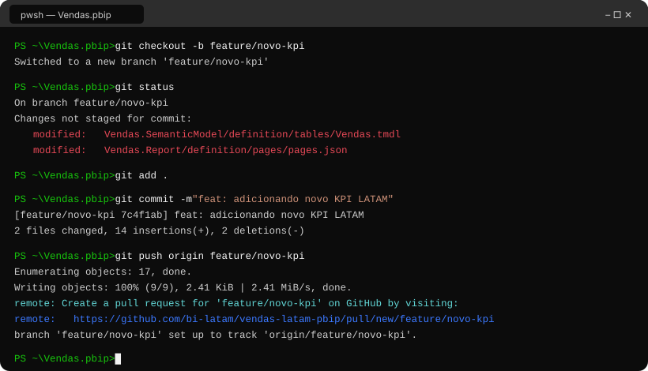
O ciclo completo em um terminal. Note a última linha: o GitHub já devolve o link para abrir o
Pull Request — próximo capítulo.
O mesmo modelo com commits reais: veja como cada feature nasce de develop e volta para ela,
enquanto o hotfix parte direto da main.
Comandos essenciais de branch
PowerShell — gerenciando branches
# listar branches locais (o * marca a atual)git branch# listar TODAS, inclusive as do remotogit branch-a# criar e mudar para a nova branchgit checkout-bfeature/dashboard-latam# apenas mudar para uma branch existentegit checkout develop
# renomear a branch atualgit branch-mfeature/nome-correto# apagar branch local já mescladagit branch-dfeature/dashboard-latam# apagar a branch no GitHubgit push origin --deletefeature/dashboard-latam
Vantagens de trabalhar com branches
Isolamento: sua medida pela metade não quebra o relatório de ninguém.
Paralelismo real: três pessoas em três frentes, sem fila de espera pelo arquivo.
Revisão natural: a branch se torna um Pull Request, que se torna uma conversa.
Reversão barata: se a ideia não prestou, apaga-se a branch e nada foi perdido.
Rastreabilidade: o nome da branch liga a mudança à demanda ou ao ticket.
Boas práticas
Faça
Nunca desenvolva direto na main. Proteja-a nas configurações do repositório.
Uma feature branch por atividade — não junte três demandas na mesma branch.
Commits pequenos e frequentes, cada um com um propósito claro.
Nomes padronizados:tipo/descricao-curta-em-kebab-case.
Atualize a branch com git pull origin develop a cada dia ou dois.
Apague a branch depois do merge — o histórico já está preservado.
Evite
Branches com nomes como teste, minha-branch ou ana.
Branches que vivem semanas sem sincronizar — o conflito cresce junto.
Um único commit gigante no fim do trabalho ("subi tudo").
Commitar direto na main "porque era rápido".
Deixar dezenas de branches mortas no repositório.
Convenção de nomes
# bons nomes de branch
feature/kpi-margem-latam
feature/pagina-comparativo-anual
fix/relacionamento-calendario
hotfix/medida-ytd-duplicando
refactor/modelo-estrela
release/2026.09
# nomes que atrapalham a equipe
teste2
ana
branch-nova
correcoes-finais-v3
Capítulo 8
Pull Request: pedindo para juntar o trabalho
O Pull Request (PR) é um pedido formal: "terminei minha parte, por favor revisem e incorporem
ao projeto". É onde a revisão por pares acontece — e onde o PBIP mostra seu valor.
O que é um Pull Request
Tecnicamente, é um pedido de merge de uma branch em outra. Na prática, é muito mais:
uma página no GitHub que reúne a lista de commits, o diff completo de cada arquivo, os comentários
da equipe, as verificações automáticas e o botão que executa o merge.
Para um projeto Power BI, isso significa que um colega consegue ler exatamente a medida DAX que você
escreveu, comentar na linha específica e sugerir ajustes antes de a mudança chegar
ao relatório oficial.
Fluxo do Pull Request
Feature Branchtrabalho isolado
Pushpublica a branch
Pull Requestpedido de merge
Reviewrevisão por pares
Approvalaprovação
Mergeincorporado
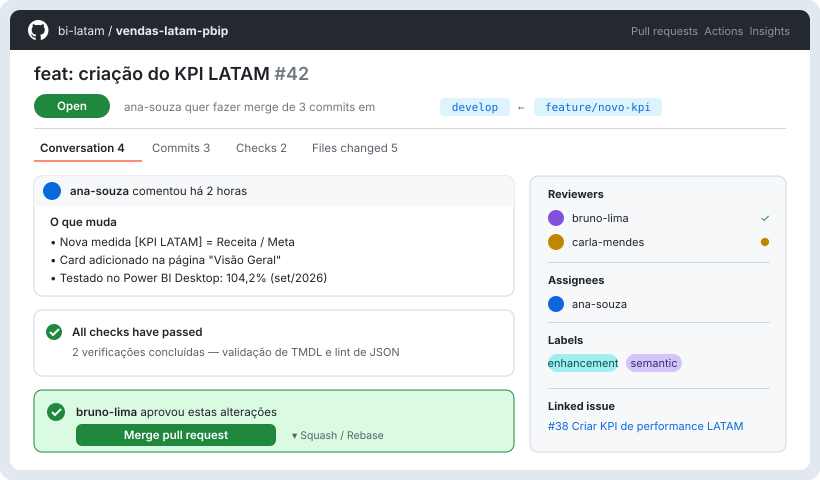
Um Pull Request real: branch de origem e destino, descrição, verificações automáticas,
aprovação do revisor e o botão Merge pull request.
Como abrir o Pull Request
Dê o push da sua branch
PowerShell
git push origin feature/novo-kpi
Abra o link que o Git devolveu
Ou vá ao repositório no GitHub e clique em Compare & pull request.
Confira as branches: base ? compare
base é para onde o código vai (develop) e compare é de onde
vem (feature/novo-kpi). Trocar as duas é o erro mais comum de quem começa.
Escreva título e descrição
O título segue o padrão do commit. A descrição responde o que, por que e como testar.
Adicione revisores e crie
Marque pelo menos um colega em Reviewers e clique em Create pull request.
Exemplo completo de descrição de PR
Markdown — descrição do Pull Request
## O que muda
- Nova medida `[KPI LATAM]` = DIVIDE( [Receita], [Meta] )
- Card do KPI adicionado na página "Visão Geral"
- Formatação percentual com uma casa decimal
## Por que
Demanda #38 — a diretoria comercial precisa acompanhar o
atingimento de meta por país no mesmo painel de receita.
## Arquivos afetados
- `Vendas.SemanticModel/definition/tables/Vendas.tmdl`
- `Vendas.Report/definition/pages/pages.json`
## Como testar
1. `git checkout feature/novo-kpi` e abra o `Vendas.pbip`
2. Atualize os dados e vá para a página "Visão Geral"
3. Confira o card: deve exibir 104,2% para set/2026
4. Valide contra a planilha de metas do Comercial
## Checklist
- [x] Testado no Power BI Desktop
- [x] Medida documentada com descrição no modelo
- [x] Sem credenciais ou dados sensíveis no commit
- [ ] Validado pelo time de negócio
Crie um template de PR para o time
Salve o modelo acima em .github/pull_request_template.md no repositório.
O GitHub vai preencher automaticamente a descrição de todo novo Pull Request.
Merge é a operação que traz os commits de uma branch para outra. O Git tenta fazer isso sozinho —
e consegue na maioria das vezes.
PowerShell — merge local
# 1. vá para a branch que vai RECEBER as alteraçõesgit checkout develop
# 2. garanta que ela está atualizadagit pull origin develop
# 3. traga a branch de origemgit mergefeature/novo-kpi
O sentido do merge importa
Você sempre entra na branch de destino e pede o merge da branch de
origem. Estar na feature e rodar git merge develop
faz o contrário: traz develop para dentro da sua feature (o que também é útil, para atualizar).
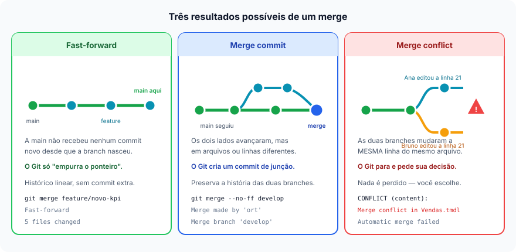
Os três resultados possíveis de um git merge, com o comando e a saída típica de cada um.
Fast-forward
Acontece quando a branch de destino não recebeu nenhum commit novo desde que a feature
nasceu. Não há nada para reconciliar: o Git simplesmente move o ponteiro da branch para a frente.
O histórico fica linear, sem commit extra.
Se você quiser registrar explicitamente que houve uma integração (útil para auditoria em projetos
corporativos), force um commit de merge:
PowerShell
git merge--no-fffeature/novo-kpi
Merge commit
É o caso mais comum no dia a dia de uma equipe: as duas branches avançaram, mas em
arquivos ou linhas diferentes. O Git junta tudo automaticamente e cria um commit
especial com dois pais, preservando as duas histórias.
Saída típica
Merge made by the 'ort' strategy. Vendas.Report/definition/pages/pages.json | 28 ++++++++++++++-- Vendas.SemanticModel/definition/tables/Vendas.tmdl | 9 +++++++ 2 files changed, 34 insertions(+), 3 deletions(-)
Merge conflict
O Git para quando as duas branches alteraram a mesma linha do mesmo arquivo. Ele não
tem como adivinhar qual versão está certa, então entrega a decisão para você. Nada é perdido e
nada é sobrescrito — o próximo capítulo mostra como resolver.
Saída típica
Auto-merging Vendas.SemanticModel/definition/tables/Vendas.tmdlCONFLICT (content): Merge conflict in Vendas.SemanticModel/definition/tables/Vendas.tmdlAutomatic merge failed; fix conflicts and then commit the result.
Qual estratégia usar no botão do GitHub
Opção
O que faz
Quando usar em projetos Power BI
Create a merge commit
Mantém todos os commits da branch e adiciona um commit de junção.
Padrão recomendado. Preserva o rastro completo de quem fez o quê.
Squash and merge
Comprime todos os commits da branch em um só.
Ótimo quando a branch tem muitos commits de "ajuste" e você quer um histórico limpo.
Rebase and merge
Reaplica os commits no topo da base, sem commit de junção.
Histórico linear elegante, mas reescreve hashes — evite se o time é iniciante.
Feche o Power BI Desktop antes de qualquer merge
Com o projeto aberto, o Desktop pode reescrever arquivos durante a operação e você acaba com um
estado inconsistente. Depois do merge, abra o .pbip e confira o relatório.
Capítulo 10
Resolução de conflitos
Conflito não é erro nem defeito: é o Git avisando que duas pessoas tiveram ideias diferentes sobre
a mesma linha. Resolver é escolher — e testar.
Simulando um conflito real
Ana e Bruno receberam a mesma demanda de formas diferentes. Os dois editaram a medida
[KPI LATAM] no arquivo Vendas.tmdl, cada um na sua branch.
PowerShell — o conflito aparece
# Ana está na branch dela e traz as novidades de developPS>git checkoutfeature/novo-kpiPS>git pull origin develop
Auto-merging Vendas.SemanticModel/definition/tables/Vendas.tmdlCONFLICT (content): Merge conflict in .../tables/Vendas.tmdlAutomatic merge failed; fix conflicts and then commit the result.# ver exatamente quais arquivos precisam de decisãoPS>git statusYou have unmerged paths.Unmerged paths: both modified: Vendas.SemanticModel/definition/tables/Vendas.tmdl
Entendendo os marcadores de conflito
O Git escreve as duas versões dentro do arquivo, separadas por três marcadores. Eles não são código:
são sinalização temporária que você precisa remover.
Início da sua versão — o que está na branch em que você está agora (Current Change).
=======
A linha divisória entre as duas versões.
>>>>>>> develop
Fim da versão que está chegando, vinda da outra branch (Incoming Change).
Como resolver
O VS Code detecta os marcadores e oferece botões no topo do arquivo. Você tem quatro caminhos:
Accept Current
Mantém a sua versão e descarta a que chegou.
Accept Incoming
Mantém a versão do colega e descarta a sua.
Accept Both
Fica com as duas. Cuidado: pode duplicar medidas no TMDL.
Editar à mão
O mais comum em DAX: escrever a versão correta combinando as duas.
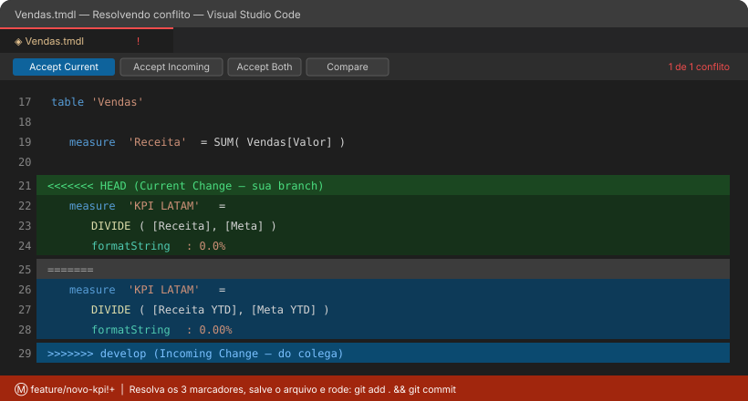
O conflito no VS Code: em verde a sua versão, em azul a que está chegando, e os botões de
resolução no topo do editor.
Converse antes de escolher
No exemplo, a versão correta era a terceira: usar [Receita YTD] (decisão do Bruno) com
formatação de uma casa decimal (padrão do time). Um conflito quase sempre revela uma
divergência de entendimento, não um problema técnico.
Edite o arquivo e remova TODOS os marcadores
Vendas.tmdl — resolvido
measure 'Receita' = SUM( Vendas[Valor] )
measure 'KPI LATAM' =
DIVIDE( [Receita YTD], [Meta YTD] )
formatString: 0.0%
displayFolder: KPIs
description: Atingimento de meta acumulado no ano.
Marcador esquecido = projeto corrompido
Se sobrar um <<<<<<< no arquivo TMDL ou JSON, o Power BI Desktop
se recusa a abrir o projeto. Use Ctrl+F e busque por <<< antes de commitar.
Teste antes do merge — o passo que ninguém pode pular
Arquivo resolvido não significa relatório funcionando. Abra o projeto e valide:
O .pbipabre no Power BI Desktop sem erro de leitura.
O modelo atualiza os dados sem erro de DAX.
A medida devolve o número esperado, conferido contra uma fonte conhecida.
Os visuais que usavam a medida continuam renderizando.
Nenhuma medida ficou duplicada (efeito colateral do "Accept Both").
Marque como resolvido e conclua o merge
PowerShell — finalizar
# sinaliza ao Git que o arquivo está resolvidogit add Vendas.SemanticModel/definition/tables/Vendas.tmdl
# confirme que não há mais nada em "unmerged paths"git status# conclui o mergegit commit-m"merge: resolve conflito na medida KPI LATAM"git push origin feature/novo-kpi
Quando quiser desistir e voltar atrás
PowerShell — abortar com segurança
# cancela o merge e volta tudo ao estado anteriorgit merge--abort# descarta a resolução de um arquivo e traz os marcadores de voltagit checkout--merge Vendas.SemanticModel/definition/tables/Vendas.tmdl
# ver o conflito lado a lado no terminalgit diff--diff-filter=U
A melhor forma de resolver conflito é preveni-lo
Divida as tarefas por área do projeto (um cuida do modelo, outro dos visuais), faça
git pull todos os dias e mantenha as branches curtas. Conflito de duas semanas
é sempre mais difícil que conflito de duas horas.
Capítulo 11
Colaboração entre desenvolvedores
Vamos juntar tudo num cenário real: dois analistas, um projeto, uma semana de trabalho.
Ana cuida do modelo semântico; Bruno cuida dos visuais.
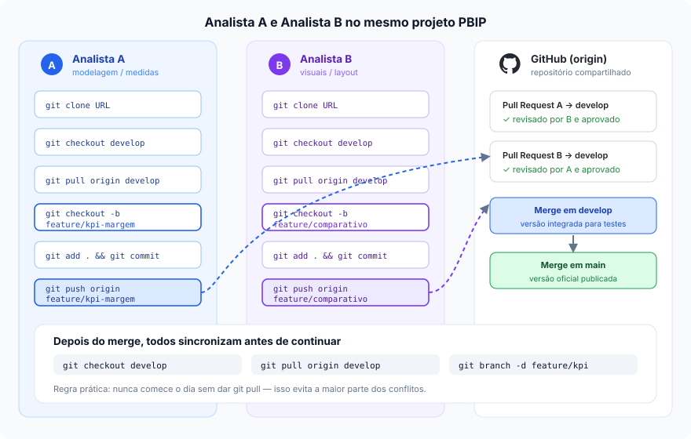
O fluxo completo da colaboração: cada analista na sua branch, encontro apenas no Pull Request.
O cenário, passo a passo
Ambos clonam o projeto
Uma vez por máquina. A partir daqui, ninguém clona de novo.
Ana abre PR de feature/kpi-margem ? develop e coloca Bruno como revisor.
Bruno faz o mesmo com a branch dele. Revisão cruzada: cada um olha o trabalho do outro.
Merge para develop
Aprovados, os dois PRs entram em develop. O primeiro merge costuma ser
fast-forward; o segundo gera um merge commit — comportamento normal e esperado.
Merge para main
Depois de develop ser validado (dados conferidos, visuais aprovados pelo negócio),
abre-se um PR de develop ? main. A main passa a ser a versão oficial.
Os comandos de sincronização, explicados
Comando
O que faz
Altera seus arquivos?
git fetch
Consulta o remoto e baixa as informações sobre commits e branches novas.
Não. É a forma segura de "espiar" antes de integrar.
git pull
Faz fetch e já integra (merge) na sua branch atual.
Sim. Feche o Power BI Desktop antes.
git push
Envia seus commits locais para o repositório remoto.
Altera o remoto, não o seu local.
git pull origin main
Traz especificamente a main do remoto para a branch em que você está.
Sim. Usado para alinhar a feature com a versão oficial.
git pull origin develop
Traz a develop atualizada para a sua branch de trabalho.
Sim. É o comando do "atualize sua branch frequentemente".
PowerShell — rotina de sincronização
# === TODA MANHÃ, antes de abrir o Power BI ===git statusgit fetchgit pull origin develop
# === A CADA DOIS DIAS, alinhe sua feature com a base ===git checkoutfeature/kpi-margemgit pull origin develop
# === DEPOIS DE UM MERGE APROVADO ===git checkout develop
git pull origin develop
git branch-dfeature/kpi-margem
Combinem a divisão de trabalho antes de começar
Se Ana mexe só em *.SemanticModel/ e Bruno só em *.Report/,
os conflitos praticamente desaparecem. Quando os dois precisam mexer no mesmo arquivo,
o melhor é fazer em sequência, não em paralelo.
Capítulo 12
Boas práticas para equipes Power BI
Oito acordos simples que transformam Git de "ferramenta que atrapalha" em processo que a equipe
nem percebe mais.
1. Trabalhe com PBIP
É o pré-requisito de tudo. Com PBIX você tem backup na nuvem; com PBIP você tem
versionamento de verdade — diff, revisão e merge.
2. Nunca troque arquivos por e-mail
Nem por WhatsApp, Teams ou pen drive. Se não passou pelo repositório, não existe.
O repositório é a única fonte da verdade.
3. Toda mudança via Pull Request
Inclusive as suas. Proteja a main nas configurações do repositório exigindo
pelo menos uma aprovação.
4. Atualize a branch frequentemente
Um git pull origin develop a cada dois dias mantém o conflito pequeno e
administrável.
5. Commits pequenos
Um commit = uma ideia concluída. "Criei a medida" e "ajustei o visual" são dois commits,
não um só.
6. Escreva mensagens claras
A mensagem é para o colega de dentro de seis meses — que pode ser você mesmo, sem lembrar
de nada.
7. Use revisão por pares
Quem revisa verifica a lógica DAX, a nomenclatura e o impacto nos visuais. Duas cabeças
pegam erro que uma não pega.
8. Sincronize antes de começar
git pull é o primeiro comando do dia, antes de abrir o Power BI Desktop.
Sempre.
Exemplos de bons commits
O padrão Conventional Commits usa um prefixo
que diz a natureza da mudança. Lê-se o histórico como um changelog.
Mensagens de commit — exemplos reais
git commit-m"feat: criação do KPI LATAM"git commit-m"fix: correção da medida YTD"git commit-m"refactor: reorganização do modelo"git commit-m"docs: atualização da documentação"
Prefixo
Quando usar em Power BI
Exemplo
feat
Nova medida, nova página, nova tabela
feat: criação do KPI LATAM
fix
Correção de cálculo, relacionamento ou filtro
fix: correção da medida YTD
refactor
Reorganização sem mudar resultado
refactor: reorganização do modelo
docs
README, descrições de medidas, dicionário de dados
docs: atualização da documentação
style
Cores, fontes, formatação de visuais
style: padronização das cores dos cards
perf
Otimização de desempenho do modelo
perf: remoção de colunas não utilizadas
chore
Manutenção, .gitignore, configuração
chore: ajuste no gitignore do cache
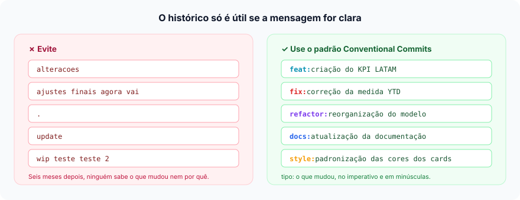
À esquerda, mensagens que não dizem nada. À direita, o padrão que faz o histórico virar documentação.
Combinados adicionais que funcionam bem
Feche o Power BI Desktop antes de pull, merge ou troca de branch.
Nunca commite credenciais nem planilhas de origem — para isso existe o .gitignore.
Documente as medidas no próprio modelo (campo description): a documentação viaja com o projeto.
Padronize a nomenclatura de tabelas, colunas e medidas antes de escalar o time.
Uma demanda, uma branch, um PR. PRs gigantes não são revisados de verdade.
Proteja a main: exija PR, aprovação e branch atualizada antes do merge.
Capítulo 13
Publicação e entrega final
O projeto foi aprovado pelo negócio. Agora a mudança precisa percorrer o último trecho:
de develop para main e da main para o Serviço do Power BI.
O fluxo da entrega
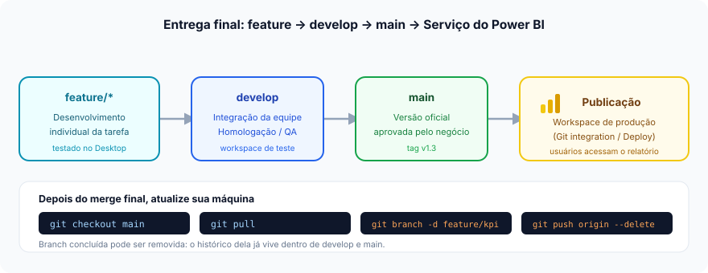
feature ? develop ? main ? workspace de produção.
Cada seta é um Pull Request revisado.
featuredesenvolvimento
develophomologação
mainversão oficial
Publicaçãoprodução
Depois do merge final
Com o PR de develop ? main aprovado e mesclado, todo mundo precisa alinhar
a máquina local com a nova versão oficial:
PowerShell — alinhar com a versão oficial
git checkout main
git pull
E, opcionalmente, marque a versão entregue com uma tag:
O que está na main é o que está publicado. Se alguém pergunta "qual é o relatório
certo?", a resposta é sempre: o da main.
Branches concluídas podem sair
O histórico da feature já vive dentro de develop e main. Apagar a branch
não apaga os commits — só limpa a lista.
Melhoria nova, branch nova
Nunca reabra uma branch antiga. Toda demanda seguinte nasce de uma
develop atualizada.
PowerShell — limpeza e próximo ciclo
# apagar a branch local já mescladagit branch-dfeature/novo-kpi# apagar a branch no GitHubgit push origin --deletefeature/novo-kpi# limpar referências de branches que já não existem no remotogit fetch--prune# === começar a próxima demanda ===git checkout develop
git pull origin develop
git checkout-bfeature/proxima-melhoria
Próximo passo: automatizar a publicação
O Microsoft Fabric permite conectar um workspace diretamente a uma branch do GitHub
(Git integration). O merge na main passa a atualizar o relatório em produção
sem ninguém clicar em "Publicar".
Veja a documentação de integração Git do Fabric.
Capítulo 14
Comandos Git mais utilizados
A referência rápida para consultar no dia a dia. Treze comandos cobrem mais de 95% do trabalho
em um projeto Power BI.
Comando
Descrição
Exemplo real
git init
Transforma a pasta atual em um repositório Git, criando a subpasta .git.
git init
git clone
Baixa um repositório remoto com todo o histórico. Use uma vez por máquina.
Mostra a branch atual, o que mudou e o que está preparado para commit.
git status
git add
Coloca as alterações na área de preparo (staging).
git add . git add Vendas.SemanticModel/
git commit
Grava as alterações preparadas no histórico, com uma mensagem.
git commit -m "feat: criação do KPI LATAM"
git push
Envia os commits locais para o repositório remoto.
git push origin feature/novo-kpi
git pull
Baixa e já integra as alterações do remoto na branch atual.
git pull origin develop
git fetch
Consulta o remoto sem alterar seus arquivos. O jeito seguro de espiar.
git fetch --prune
git branch
Lista, cria, renomeia ou apaga branches.
git branch -a git branch -d feature/kpi
git checkout
Troca de branch ou cria uma nova com -b.
git checkout -b feature/novo-kpi
git merge
Traz os commits de outra branch para a branch atual.
git merge feature/novo-kpi
git log
Exibe o histórico de commits. Com --oneline --graph fica visual.
git log --oneline --graph --all
git remote -v
Mostra os endereços remotos configurados (fetch e push).
git remote -v
Vendo o histórico como um gráfico
PowerShell — histórico visual
git log--oneline --graph --all --decorate
Saída
* 9f2c1de (HEAD -> main, origin/main) Merge pull request #44 from develop|\| * 7c4f1ab (develop) feat: criação do KPI LATAM| * 3e8a2b9 style: padronização das cores dos cards|/* a1b2c3d fix: correção da medida YTD* 5d9e7f1 Primeiro commit
Comandos de emergência que vale conhecer
PowerShell — salvando o dia
# descartar alterações de um arquivo (CUIDADO: não tem volta)git restore Vendas.Report/definition/report.json
# desfazer o último commit, mantendo as alterações nos arquivosgit reset--soft HEAD~1
# guardar temporariamente o que você está fazendogit stashgit stash pop# corrigir a mensagem do último commit (antes do push)git commit--amend-m"feat: mensagem corrigida"# ver quem alterou cada linha de um arquivogit blame Vendas.SemanticModel/definition/tables/Vendas.tmdl
# o histórico de TUDO que você fez — o salva-vidas do Gitgit reflog
Antes de rodar qualquer comando destrutivo
Copie a pasta do projeto para outro lugar. Leva dez segundos e evita um dia ruim.
git restore, git reset --hard e git clean apagam trabalho
que nunca foi commitado — e o Git não consegue recuperar o que nunca viu.
Capítulo 15
Checklist final
Marque cada item conforme avança. O progresso fica salvo no seu navegador, então você pode
fechar a página e voltar depois.
0 de 10 concluídos
Dez itens marcados = ciclo completo dominado
Você saiu de "arquivo por e-mail" para um fluxo versionado, revisado e rastreável.
A partir daqui, o próximo nível é automatizar: integração Git do Fabric, validação
automática de TMDL e Deployment Pipelines.
Seção extra
Recursos úteis
Documentação oficial para consultar quando este guia não for suficiente. Todos os links abrem
em nova aba.